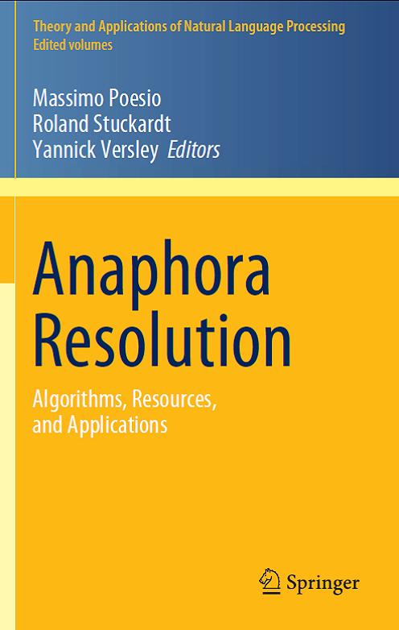

Advanced Machine Learning Models for Coreference Resolution
Vincent Ng.
In Massimo Poesio, Roland Stuckardt, and Yannick Versley (Eds.),
Anaphora Resolution: Algorithms, Resources, and Evaluation,
Springer Verlag, 2016.
Click here to access the publisher's website for the book.
Abstract
Despite being the most influential learning-based coreference model, the mention-pair model
is unsatisfactory from both a linguistic perspective and a modeling perspective: its focus on making local coreference decisions involving only two mentions and their contexts makes it even less expressive than the computational systems for coreference developed in the pre-statistical NLP era.
Realizing its weaknesses,
researchers have developed many advanced coreference models over the years.
In particular, there is a gradual shift from local models towards global models, which seek to address the weaknesses of local models by exploiting additional information beyond that of the local context.
In this chapter, we will discuss these advanced models for coreference resolution.
